Presentation framework for developers
Features
- Vertical Slides
- Basic Markdown Parsing
- HTML Based API
- JS Based API
- Side Numbers
- Zoom Out View (press z)
- A lot of configuration options
How to use it?
First, Set up the slides
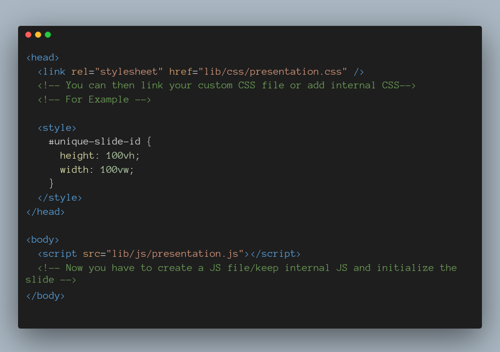Define your markup
You have to insert a unique DOM selector. It can be an id or a class
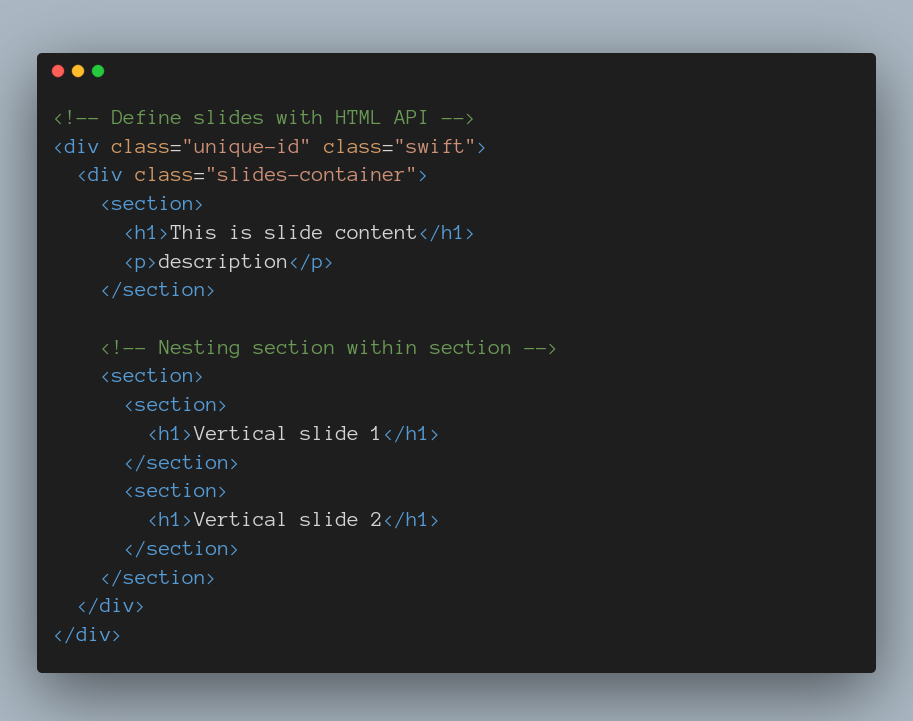If you have not defined the CSS internally/inline
You can create a CSS file, add the CSS as following and link it to HTML
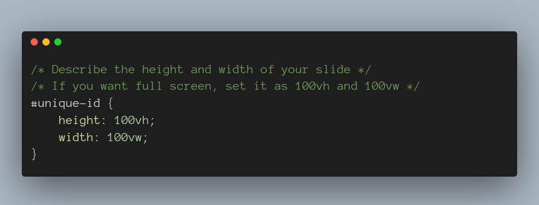The final thing is to initialize the slides with js
For that, create a js file (name anything you want), link it to HTML doc and write the following
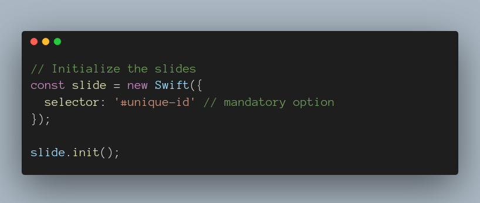Go right for exploring customization options
Customization Options
You can customize the slides with CSS as you want
That means, as a developer you have full control
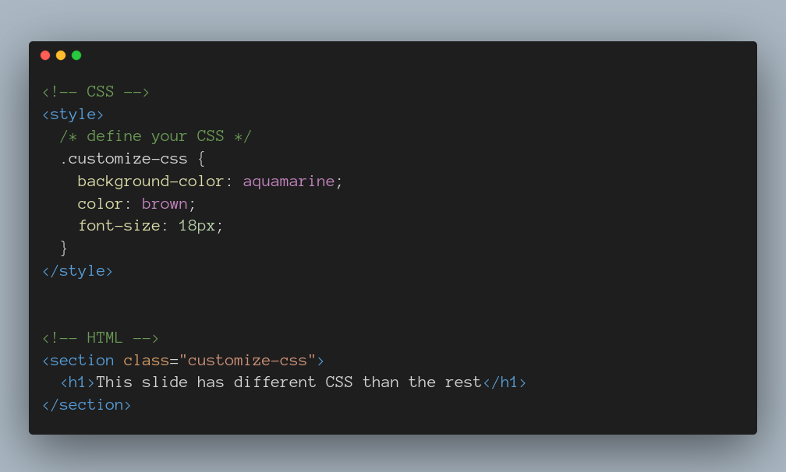You can also change the slide behavior
Slides' behavior can be modified by changing the config object passed while initializing the slide object
Modify slide transition time, auto-slide and hold times
All of these options are optional
-
slideTime- number (in seconds) - default = 0.5 (seconds) autoSlide- boolean - default = false-
autoSlideInterval- number (in seconds) - default = 5 (seconds)
Switch themes
You can switch between a dark theme or a light theme
For that, you need to enable a setting. After doing that you can press t on keyboard or click a button on the top right corner and switch between the 2 themes.
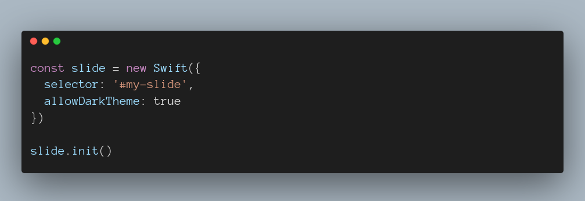Slide Numbers
You can display slide numbers too by passing slideNumber value as true on config object.
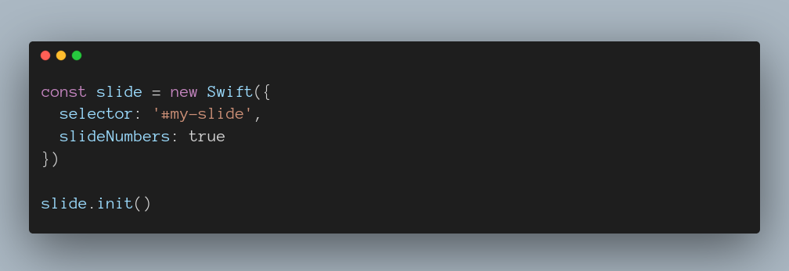Zoom out view
You can enable zoom out view by passing zoomedOutView as true to config object

Theme Customization
By default, Swift.JS comes with a default light theme and a dark theme. However, you can modify how it looks by modifying some CSS variables.
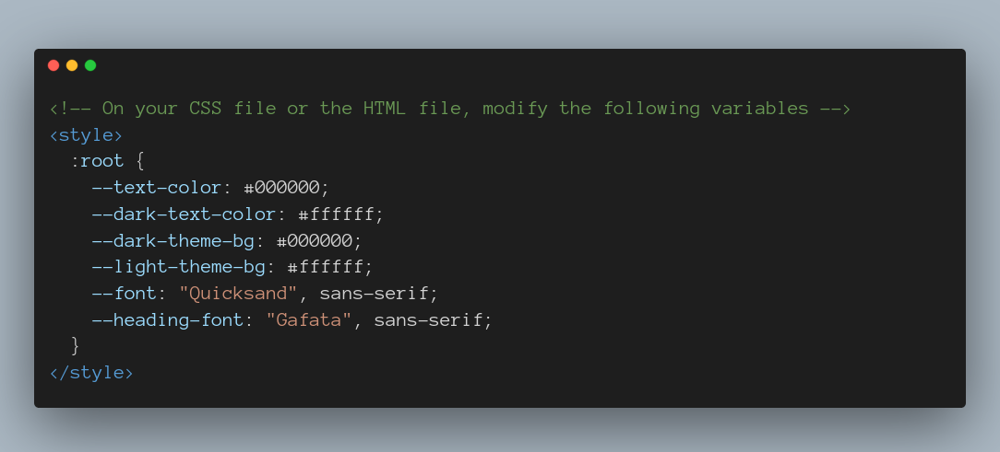The variable names are self explanatory
Modifying some specific styling
Don't
do
this
but you can
To apply specific styling
First define the markup
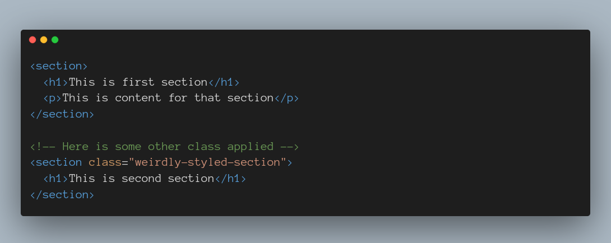Then define the CSS
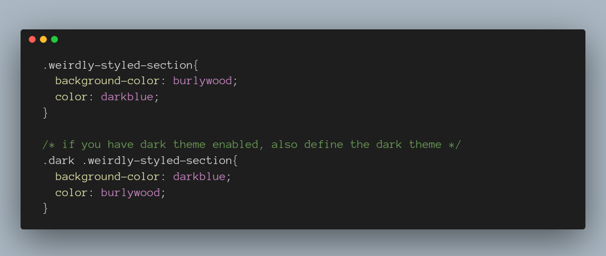JavaScript Based API 🔥
With the use of this, you can define entire slides with JS
Including library
This step is the same as other steps defined on slide 3.2
Let's define the data
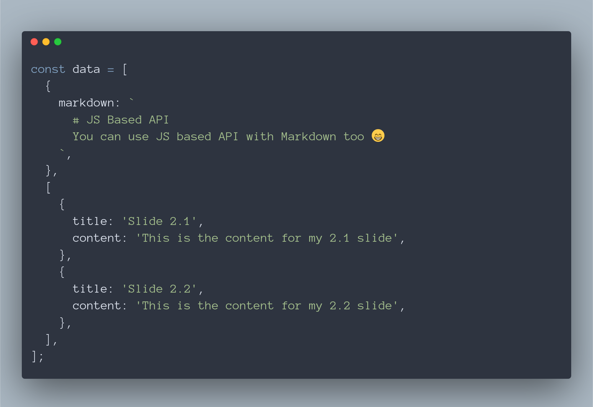Now we have to initialize the slide and pass data object

Notice data property on config object?
Some pointers
- You can use markdown with the JS API (See the first element of the data object)
- If you have just a single horizontal slide, you add the object itself
- If you have vertical slides, you have to create an array of objects
- You can use heading, content and markdown properties only.
Markdown 💣
Markdown is like a markup language which can be compiled into HTML
Adding markdown support
Adding markdown support is easy
In the sections you plan to use markdown, add a class
markdown on the section.
Some pointers
- You can use markdown with JS based API
-
Be careful about code formatters,
They can change formatting in your HTML document and cause chaos. - It just supports headings, paragraph, bold text, italic text, link and images now. So advanced MD should not be used.